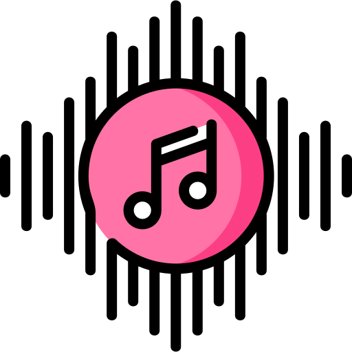
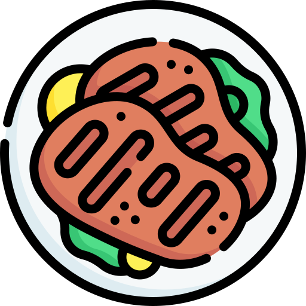

Música
Me encanta escuchar variados géneros. Mis favoritos son el Soul, el Trap y el Reggaeton. Siempre tengo unos audífonos a la mano.
Estas son algunas de las cosas que disfruto y me apasionan:

Me encanta escuchar variados géneros. Mis favoritos son el Soul, el Trap y el Reggaeton. Siempre tengo unos audífonos a la mano.
Me apasiona el mundo de las criptomonedas y las divisas. Sigo de cerca las tendencias del mercado y disfruto aprendiendo sobre inversiones digitales. Tengo mi propio portafolio de inversiones.

Apasionado por la pasta y la carne. Me encanta probar platos de diferentes culturas y experimentar con nuevos sabores.